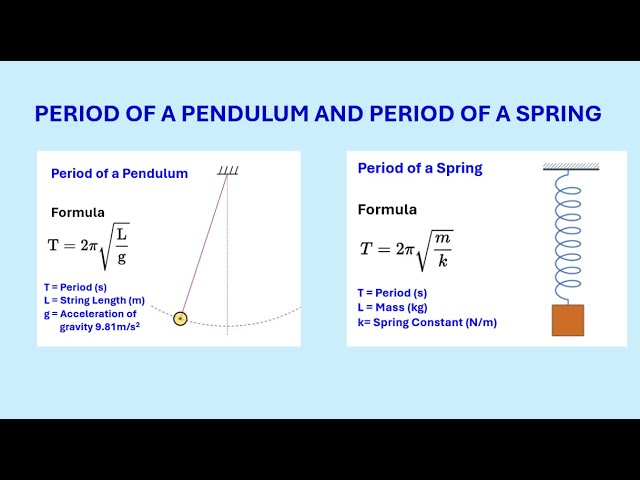

When an object undergoes simple harmonic motion (SHM), it repeats its motion in a regular cycle. We quantify this timing using three related values:
For both horizontal and vertical spring systems (assuming no damping and friction), the motion follows Hooke’s Law: \( F = -kx \). This produces SHM when the mass is displaced from equilibrium.
- \( k \): Spring constant (N/m) - \( m \): Mass (kg) - These equations apply to **horizontal** spring systems directly. - For **vertical springs**, the equilibrium position shifts due to gravity, but the formulas remain the same for small oscillations.
A simple pendulum consists of a mass suspended from a light, inextensible string. When displaced slightly from equilibrium, it undergoes SHM due to the restoring force of gravity.
- \( g \): Acceleration due to gravity (≈ 9.8 m/s²) - \( L \): Length of the pendulum (from pivot to center of mass) - These equations are valid only for **small angles** (typically \( \theta < 15^\circ \)) where the restoring force is proportional to displacement.
All of these systems obey the same basic differential equation:
This equation guarantees that the system’s motion is sinusoidal, with angular frequency \( \omega \) determined by system parameters like mass, spring constant, or pendulum length.